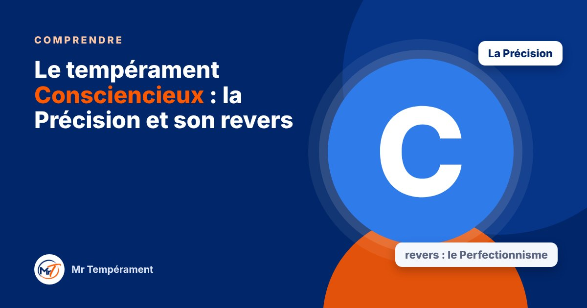

Le tempérament Consciencieux : la Précision et son revers

Il réfléchit, il vérifie, il soigne. Voici comment il fonctionne, et ce qu'il gagne à lâcher prise.
Dans le modèle DISC, le « C » désigne le tempérament Consciencieux. Il vous ressemble peut-être, ou bien vous travaillez avec quelqu'un qui pose toujours la question qui fait avancer la qualité. Voici ce qui le caractérise. Comme pour tous les tempéraments, nous avons un peu des quatre, et celui-ci domine simplement chez certains.
Comment fonctionne le Consciencieux
Le Consciencieux cherche la justesse. Il analyse, compare, vérifie, anticipe. Il aime les règles claires, l'information fiable et le travail bien fait. Il supporte mal l'à-peu-près, les décisions prises sans réflexion et les critiques personnelles.
Sous pression, il se replie. Il a besoin de temps pour réfléchir seul avant de répondre, et il peut paraître distant alors qu'il est simplement en train de peser les choses.
Son super-pouvoir : la Précision
La Précision du Consciencieux, c'est d'élever la qualité. Il repère l'erreur avant qu'elle ne coûte cher, il pense aux détails que personne n'a vus, et il livre un travail solide. On lui confie les dossiers sensibles parce qu'il est fiable.
Une équipe sans Consciencieux se trompe plus souvent. Il protège la qualité, la rigueur et la mémoire de ce qui a été décidé.
Son revers : le Perfectionnisme
Poussée trop loin, la Précision devient du Perfectionnisme. Le Consciencieux repousse les décisions tant qu'il n'a pas toute l'information, retarde les lancements, passe trop de temps sur les détails et a du mal à déléguer. Il est souvent plus dur avec lui-même qu'avec les autres.
Il remarque aussi ce qui ne va pas avant ce qui va bien. Son affection reste parfois silencieuse, et ses proches peuvent ne pas la percevoir.
Au quotidien : couple, travail, argent
En couple, le Consciencieux est attentif et discret, mais il dit peu ce qu'il ressent. Au travail, il soigne, mais il gagne à définir à l'avance ce qui est « suffisamment bien ». Avec l'argent, il suit son budget de près, mais peut hésiter à investir ou à se faire plaisir.
Ces tendances se travaillent. Quelques repères suffisent à les alléger.
Trois gestes pour cultiver sa Précision avec légèreté
Le premier : fixer un seuil de décision à 80 % de l'information. Le deuxième : lancer une première version simple avant d'être prêt. Le troisième : annoncer son besoin de repli : « J'ai besoin d'une heure, je reviens. » Cela rassure les proches.
Si vous vivez avec un Consciencieux, donnez-lui l'information à l'avance, évitez de le presser, et remerciez-le avant de corriger quoi que ce soit. Il sera bien plus ouvert.
Une carte, jamais une cage
Être Consciencieux ne condamne pas au doute permanent. Beaucoup de Consciencieux apprennent à avancer avec une version imparfaite, et découvrent que cela libère leur talent.
Pour aller plus loin
Vous vous reconnaissez ? Le test gratuit vous donne votre tempérament dominant en une minute, sans inscription.
Découvrir mon tempérament